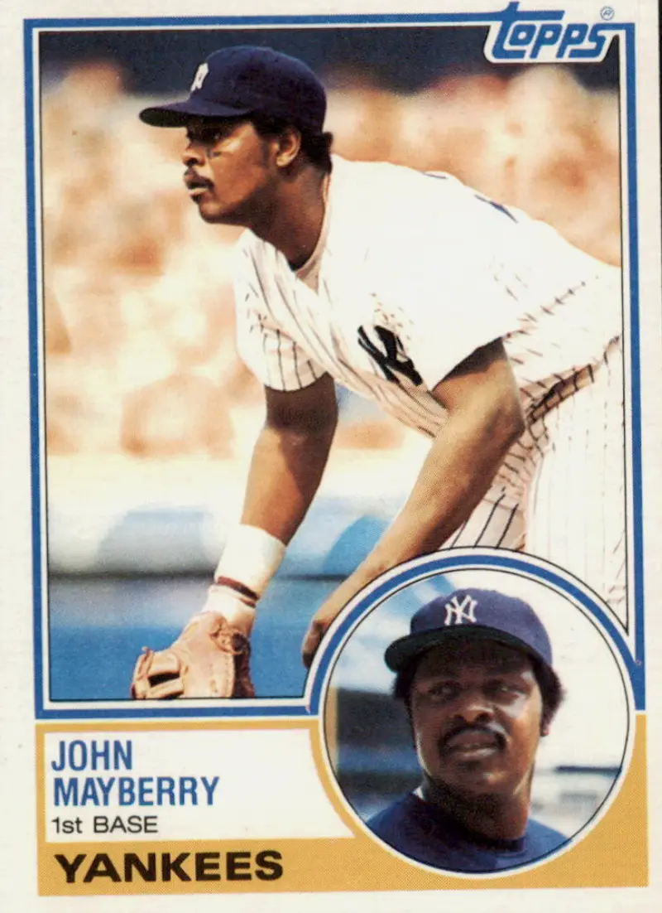

John Mayberry "Big John"
Career Highlights & Facts
(Facts are AI-generated and may require verification)
- Finished second in the 1975 American League MVP voting.
- Was a two-time American League All-Star.
- Father of John Mayberry Jr., who played nine seasons in MLB.
Career Totals
| WAR | AB | H | HR | BA | R | RBI | SB | OBP | SLG | OPS | OPS+ |
|---|---|---|---|---|---|---|---|---|---|---|---|
| 25.0 | 5447 | 1379 | 255 | .253 | 733 | 879 | 20 | .360 | .439 | .799 | 123 |
Statistics via Baseball-Reference.com
The Original Clue